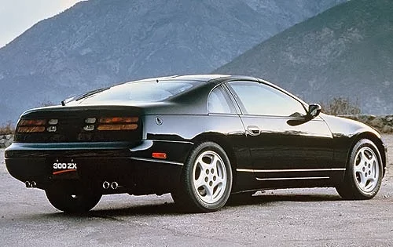

The Nissan Skyline GTR R34 was exclusively sold to the Japanese Domestic Market.
The Nissan skyline's older brother, the R32, earned the nickname "Godzilla" after it destroyed track times across the world.
The newest flagship Nissan is the Nissan GTR R35. It was no longer attached to the "Skyline" moniker.
This is the Nissan S body platform. Pictured above is the Nissan Silvia S15. It is very commonly used as drift car because of its amazing front/rear weight ratio.
The Nissan S platform has many variants. An earlier version is known as the Nissan S13, pictured below, left.

The Nissan 300zx is one of the many cars in the "Z" lineup that Nissan, or rather Datsun created back in the 1960's. Here is one pictured above, right.
Another car in the "Z" lineup is the Nissan 350Z which is another great car used for drifting.
The newest car in the "Z" lineup is a face-lifted 350z a more aggressive looking front and rear bumper. It also has a slightly larger displacement engine.